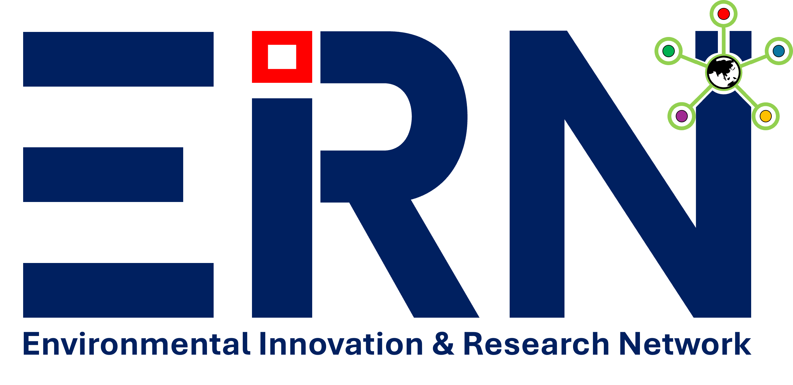

Advancing Climate Intelligence & Geospatial Science
EIRN is a multidisciplinary research and consulting organization specializing in climate systems, geospatial intelligence, and environmental modeling.
Wildfire risk, HDW modeling, and environmental hazards.
Pollution exposure and human health impact assessment.
Satellite data, machine learning, and predictive modeling.
ROMS modeling, sediment transport, and water systems.
Climate risk and impact analysis.
GIS, remote sensing, spatial modeling.
WRF, ROMS, hydrological modeling.
Research collaboration and applied solutions.
Southern California wildfire exposure and health risk analysis.
Climate impacts on biodiversity and coastal communities.